Home
| Search
| CTG
| RTL
| IDDE
| STL
Home
| Search
| CTG
| RTL
| IDDE
| STL
Last update Fri Apr 28 16:30:17 2006
|
Reference 1. Introducing Digital Mars C++ 2. Introducing the IDDE Part 2: Creating an Application with Digital Mars C++ 3. Starting a Project and Defining Workspaces 4. Generating an Application Framework 5. Defining Classes and Their Hierarchies 6. Editing Program Code 7. Adding Look and Feel with Resources 8. Testing an Application Part 3: Learning Digital Mars C++ by Example 9. Introduction to the Tutorial 10. Lesson 1: Create the DOS Application 11. Lesson 2: Generate an Application Framework 12. Lesson 3: Customize the Interface 13. Lesson 4: Add Messages with ClassExpress 14. Lesson 5: Add a Dialog Box with ClassExpress Part 4: More about Creating Programs 15. More about Projects and Workspaces 16. More about Project Build Settings 17. More about AppExpress 18. More about ClassExpress 19. Class Editor Reference 20. Hierarchy Editor Reference 21. Text Editor Reference 22. Using Version Control Part 5: More about Testing Programs 23. Controlling and Configuring the Debugger 24. Commands Available in Debugging Mode Part 6: About Managing Resources 25. ResourceStudio Resource Editor 26. Dialog Editor 27. Menu, Accelerator and String Table Editors 28. Bitmap, Cursor, Icon, and Font Editors 29. Version Information and Custom Resource Editors Part 7: Appendixes A. Expression Evaluation B. IDDE Settings and Command-Line Options C. Using NetBuild |
19. Class Editor ReferenceThis chapter describes menu operations and mouse functions available in the Class Editor. For an introduction to this tool, see Chapter 5, "Defining Classes and Their Hierarchies."The Class Editor WindowThere are several ways to open a Class Editor window:
Edit menu commandsWith one exception, the commands in the Edit menu (Figure 19-1) operate on text in the Source pane and are identical in function to the corresponding Edit menu commands in Source windows. For a description, see Chapter 21, "Text Editor Reference."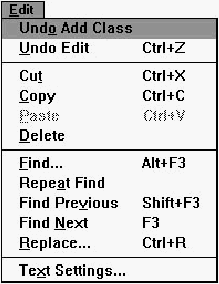 [Figure 19-1 Edit menu commands Global UndoCancels the last operation performed in the Class Editor or Hierarchy Editor (such as Add Class or Add Member). The text of this menu item changes to reflect the previous operation performed in the Class Editor.Goto menu commandsThe commands in the Goto menu (Figure 19-2) are used to move around within the Source pane and are identical to the corresponding Goto menu commands in Source windows. For a description, see Chapter 21, "Text Editor Reference."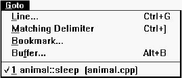 [Figure 19-2 Goto menu commands Macro menu commandsThe commands in the Macro menu (Figure 19-3) are identical to Macro menu commands in Source windows. For a description, see Chapter 21, "Text Editor Reference."
[Figure 19-3 Macro menu commands New! commandThis command opens another Class Editor window.Classes pane pop-up menu commandsThe Classes pane pop-up menu (Figure 19-4) contains commands to add and modify classes and inheritance relationships, and to access Class Editor options.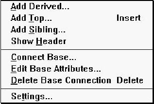 [Figure 19-4 Classes pane pop-up menu commands Add DerivedOpens a dialog box (Figure 19-5) that lets you add a new class to the hierarchy. The new class is a derived class of the currently selected class(es), whose name is shown in the dialog box's title.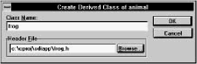 [Figure 19-5 Create Derived Class dialog box Class nameSpecifies a name for the new class.Header fileContains the name of the header file into which the class declaration is placed. By default, the first eight characters of the class name (with .h appended) are used as the header file name. You may type an alternative filename into the textbox, or click on Browse to select a filename from the Class Header File dialog box.Add TopAdds a top-level (baseless) class. The dialog box that opens as a result of selecting this command is identical in function to the one that opens when you choose the Add Derived command.Add SiblingAdds a class that is a sibling of (derived from the same base class as) the currently selected class. The dialog box that opens as a result of selecting this command is identical in function to the one that opens when you choose the Add Derived command. You cannot add siblings to classes with multiple base classes.Show HeaderOpens a new Source window to edit the header file containing the declaration of the currently selected class.Note: You can also perform this action by moving the cursor towards the left margin of the Class pane until its orientation changes and it points to the right. Then select a class and drag it onto the desktop while holding down the Control key. Connect BaseOpens the Add Base dialog box (Figure 19-6) that lets you add a base class to the selected class.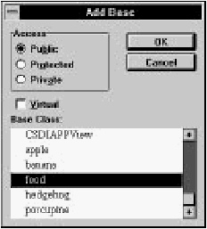 [Figure 19-6 Add Base dialog box AccessThese options indicate the base class access specifier:
VirtualSpecifies the base class to be virtual.Base classSpecifies the class that is made a base of the selected class. You can select more than one class to make a base class by holding down the Control key while clicking on the class name, or by holding down the Shift key while selecting a range of classes.Edit Base AttributesOpens the Edit Base Attributes dialog box (Figure 19-7) with which you change the attributes of the connection between the selected class and its base class.This command is disabled if classes are sorted alphabetically rather than hierarchically. 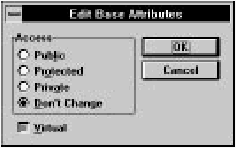 [Figure 19-7 Edit Base Attributes dialog box AccessThese options indicate the base class access specifier:
VirtualIf selected, this option specifies the base class to be virtual. If grayed, the virtual setting is left unchanged.If the selected class is derived from multiple bases, only the attributes of the connection with the base class immediately above in the Classes pane are changed. Delete Base ConnectionDeletes the connection between the selected class and its base class. If the class is derived from multiple bases, only the connection with the base class immediately above it in the Classes pane is removed.You will be prompted to confirm this if the Confirm Inheritance Changes option on the General page of the Editing/Browsing Settings dialog box is selected. This command is disabled if classes are sorted alphabetically rather than hierarchically. SettingsOpens the Editing/Browsing Settings dialog box, in which you set general Class Editor and text editor options. Details of this dialog box are discussed in "Class Editor Settings," later in this chapter.Members pane pop-up menu commandsThe Members pane pop-up menu (Figure 19-8) contains commands to add, delete, and modify class members, and to access Class Editor options.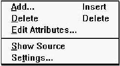 [Figure 19-8 Members pane pop-up menu commands AddOpens the Add Member dialog box (Figure 19-9). The new member is added to the class whose members are currently displayed in the Members pane.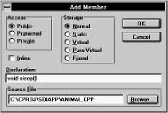 [Figure 19-9 Add Member dialog box AccessThese options specify the member access control:
StorageThese options specify the member storage class:
InlineRequests inline implementation of a function. Causes its definition to be placed in the .h file.DeclarationContains the member declaration. For data items, enter the type and member name (for example, int nCats). For functions, enter the return type, function name, and argument types (for example, void AddCats(int)). Do not precede the declaration with storage specifiers; use the option buttons above. Trailing semicolons are optional.Source fileContains the name of the source file into which the member definition is placed. By default, the first eight characters of the class name (with .cpp appended) are used as the source file name. You may type an alternative filename into the textbox, or click on Browse to select an alternative filename from the Member Source File dialog box.The member declaration is placed in the class declaration. If the specified source file does not already exist, it is created and added to the project. By default, empty definitions of inline functions are placed in the header file. Empty definitions of normal, static, and virtual functions, as well as static data members, are placed in the source file. DeleteDeletes the currently selected member. If the Confirm Member Delete option on the General page of the Editing/Browsing Settings dialog box is selected, you are asked to confirm the deletion. The member's declaration and definition (if applicable) are removed from the header and source files.Edit AttributesOpens the Change Member Attributes dialog box (Figure 19-10), which you use to edit access and storage specifiers of the selected member.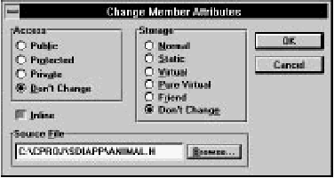 [Figure 19-10 Change Member Attributes dialog box AccessThese options specify the member access control:
StorageThese options specify the member storage class:
InlineRequests inline implementation of a function. If grayed, the current setting is left unchanged.Source fileIf applicable, this option contains the name of the source file holding the member definition. You may change the filename in the textbox, or click on Browse to select an alternative filename from the Member Source File dialog box.Show SourceOpens a new Source window to show the source file containing the definition of the currently selected member.If you add new functions or static data definitions to the source file or alter function argument or return types, you must update the class header to reflect the changes. SettingsOpens the Editing/Browsing Settings dialog box that lets you set general Class Editor and text editor options. Details of this dialog box are discussed in "Class Editor Settings," later in this chapter.Source pane pop-up menu commandsWith one exception, commands in the Source pane pop-up menu (Figure 19-11) are identical to the corresponding commands in Source windows. For a description, see Chapter 21, "Text Editor Reference."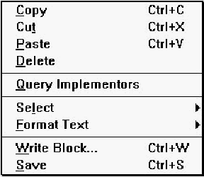 [Figure 19-11 Source pane pop-up menu commands SaveSaves the program code shown in the Source pane and places it in the appropriate source or header file.Changes to static data and to function argument and return types made in the source code are updated automatically in the class declaration and Members pane. Class editor mouse functionsThe mouse is used to select classes and members, perform editing operations, open pop-up menus, and change the relative sizes of Class Editor panes. As mentioned in "The Class Editor Window" above, drag and drop operations are supported.To resize the panes, first position the cursor over the dividing line between panes. The cursor changes to a two-headed arrow. Then, press the left mouse button and drag the separator to the desired location. Classes paneThe right mouse button opens the pop-up menu (see "Classes pane pop-up menu commands," earlier in this chapter).Select a class by clicking on it. Several classes may be selected by clicking on each one while holding down Control. The members of the class last selected appear in the Members pane. You may drag and drop a class into the source pane; the class name is inserted into the buffer. Members paneThe right mouse button opens the pop-up menu (see "Members pane pop-up menu commands," earlier in this chapter).Select a member by clicking on it. Several members may be selected by clicking on each one while holding down Control. Double-clicking on a member causes its definition (if appropriate) or declaration to appear in the Source pane. If the source is not available, the declaration is displayed. You may drag and drop a member into the source pane; the member declaration is inserted into the buffer. Note: In addition to clicking on it, you can select a member when the Members pane is active by typing its name. As you type, the Class Editor attempts to automatically complete the name. (Depending on the rate at which you type, it may consider a character to be the first character of a new selection, rather than the next character in the current select operation.) Source paneThe right mouse button opens the pop-up menu (see "Source pane pop-up menu commands," earlier in this chapter).The source pane supports typical Source window mouse and cursor operations, as described in Chapter 21, "Text Editor Reference." Toolbar commandsThe Class Editor toolbar (Figure 19-12) offers quick access to several menu options.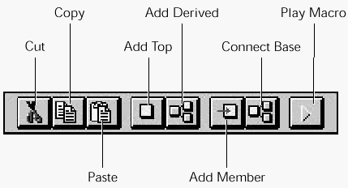 [Figure 19-12 Class Editor toolbar These options are the same as those in other menus:
Class Editor SettingsYou can access Class Editor settings by choosing Text Settings from the Edit menu, or Settings from the Classes or Members pane pop-up menus. These commands open the Editing/Browsing Settings dialog box, a workspace with tabs along the top margin. The tabs are used to switch between several sets of options. The Class, Member, and General options are discussed in this section; the remaining options pertain to text editing and are discussed in Chapter 21, "Text Editor Reference."General optionsThe General options set (Figure 19-13) contains options for undo levels, class/member bar confirmations, output window actions, and key bindings, as well as some options related to the text editor.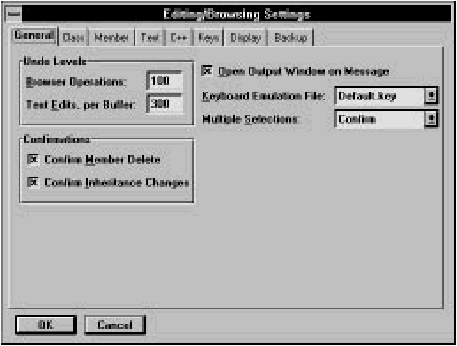 [Figure 19-13 General options Browser operationsSpecifies the number of operations that can be undone in the Class and Hierarchy Editors with the Global Undo command.Text edits, per bufferSpecifies the number of edit operations that can be undone, per buffer.ConfirmationsThese options enable confirmation requests for various operations in the Class and Hierarchy Editors. You can enable confirmations of:
Open output window on messageLets the IDDE open an error window whenever there is an error of any kind (during compilation, during parsing, and so on.)Keyboard emulation fileSpecifies the key bindings set to be used by the text editor.Multiple selectionsThis option enables multiple selections in lists in the Class and Hierarchy editors:
Class optionsThe Class options set (Figure 19-14) lets you specify the display order and font of classes in the Classes pane.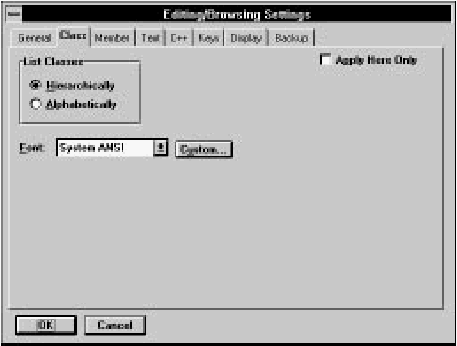 [Figure 19-14 Class options List classesThis option defines how classes are arranged in the Classes pane:
FontSpecifies the font used to display class names in the Classes pane. You can select a predefined font from the drop-down list, or you may click on Custom and select any installed font from a Windows Font dialog box.Apply here onlyIndicates that the settings specified here should be applied only to the current Class Editor window.Member optionsThe Member options set (Figure 19-15) lets you specify the display parameters of class members in the Members pane.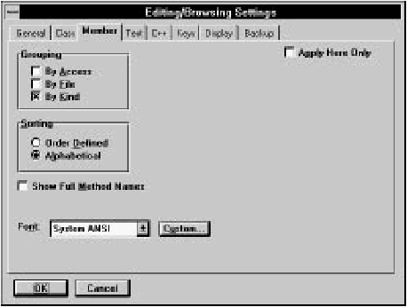 [Figure 19-15 Member options GroupingThis option indicates how class members are grouped. Any or all of the following options may be selected:
SortingThis option indicates how members are arranged within each group:
Show full method namesSpecifies that member names are displayed with their type specifiers and (if a method) their parameter type list (for example, int Multiply(int, int, int)). If this option is not selected, only the identifier name is displayed (for example, Multiply).FontSpecifies the font used to display member names in the Members pane. You can select a predefined font from the combo box, or you may click on Custom and select any installed font from a Windows Font dialog box.Apply here onlyIndicates that the settings specified here should be applied only to the current Class Editor window. Otherwise, the settings are applied to all Hierarchy and Class Editor windows. |